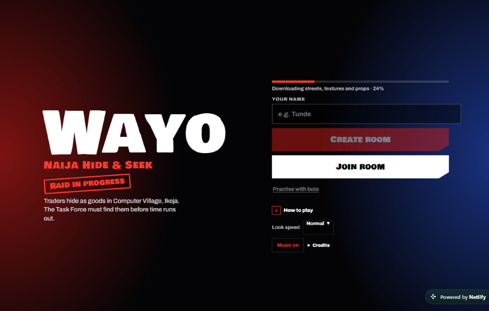

Wayo: Naija Hide & Seek.
A phone-first 3D multiplayer prop hunt set in Computer Village, Ikeja—traders disguise as market goods while the Task Force searches before time runs out.

Overview
Wayo transforms an iconic Lagos street-market dynamic into an accessible 3D multiplayer game. Traders disguise themselves as everyday marketplace objects while the Task Force conducts a four-minute raid.
The Problem
Social prop-hunt games are typically desktop-bound and detached from local Nigerian humor and mobile-first play patterns.
Product Concept
Design a landscape-first 3D browser prop hunt with instant five-letter room codes, host-controlled match starts, and solo bot practice.
Approach & Implementation
Built as a lightweight HTML/JavaScript 3D web application with online room lobbies, configurable look-speed controls, custom soundtrack toggles, and Netlify deployment.
Key Features
- 3D prop-hunt gameplay modeled on Computer Village, Ikeja
- Online multiplayer rooms with five-letter join codes and shareable invitations
- Solo bot practice mode alongside timed four-minute multiplayer raids
- Mobile landscape-first ergonomics with full desktop support and sensitivity settings
Challenges & Decisions
Keeping room joining to a five-letter code and adding a 'Practise with bots' link directly under the lobby actions minimized friction for mobile players.
Outcome & Current Status
Live and playable at playwayo.netlify.app with source available on GitHub.